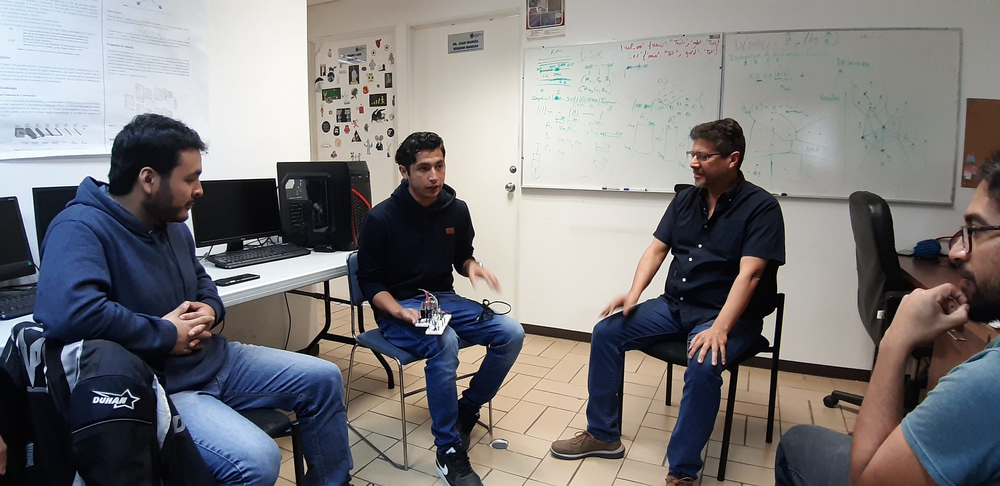

Laboratorio de Semántica Computacional CInC · UAEM
Universidad Autónoma del Estado de Morelos
LABSEMCOEquipo
Equipo
Conocimiento que se
construye en conjunto.
Investigadores, colaboradores y estudiantes provenientes de distintas disciplinas y etapas de formación.

La investigación interdisciplinaria comienza con personas capaces de mirar un mismo problema desde perspectivas distintas.
El equipo publicado por el sitio institucional reúne perfiles de matemáticas, física, lingüística, ciencias cognitivas y cómputo aplicado.